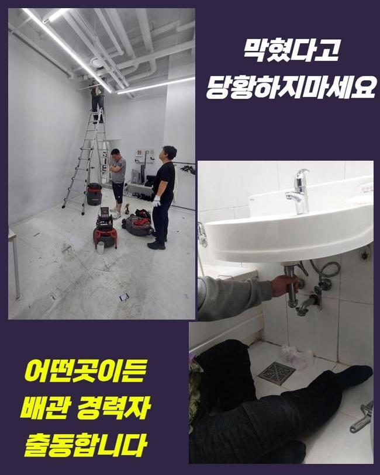
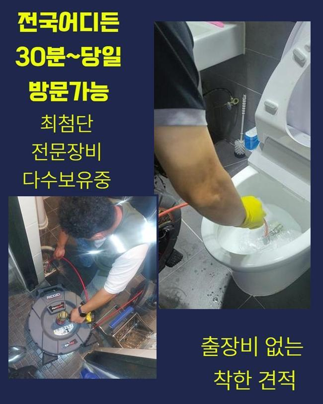
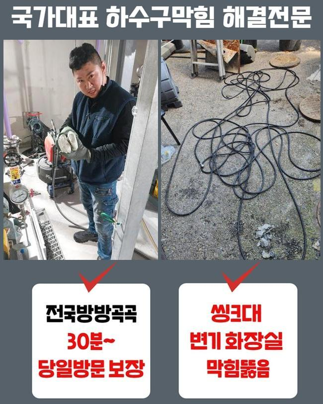
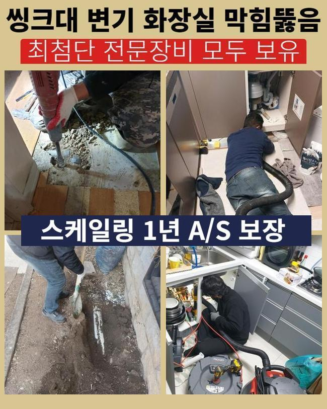

🏠 용인 역북동화장실하수구막힘 원삼면 오수맨홀청소 누수탐지공사
용인 역북동 하수구막힘 전문 시공 후기

📋 작업 개요
- 위치: 용인 역북동, 역북동, 용인
- 서비스 유형: 하수구막힘, 배관막힘, 맨홀막힘, 누수수리, 역류해결, 뚫는업체, 배관청소, 고압세척, 설비공사
- 작업 일시: 2025. 2. 6. 16:30
- 업체명: 하수구수사대 (010-5615-2118)
🔍 문제 상황
용인 역북동화장실하수구막힘 원삼면 오수맨홀청소 누수탐지공사
여러 활동으로 물을 활용하면 많은 동기로 인해서 배수관에 불순물이 집적될 수 있어요
이렇게 오물이 더해지면 강력한 돌덩어리처럼 건조되어지므로 이탈시키는 것도 난관입니다
특유의 접착력으로 붙어있는 이물질을 강제로 떼려고 과한 처사를 보이다가 배수로 어딘가에 구멍이 나는 악화된 모습을 마주하게 됩니다
잘못된 쪽이 두드러지는 상태라고 하더라도 배관용으로 출시된 장비를 활용해서 처리를 해줘야만 작은 오류도 남기지 않은 채로 배관로를 닦아낼 수 있습니다!
홀로 하수구 뚫음을 시도하면 전체적인 문제를 모조리 잡아내기 힘들고 이렇다할 변화가 없을 수 있어요
오늘 뚫어드린 장소는 여러분이 머무르는 보금자리이나 하수가 거꾸로 치솟아서 불편함이 이만저만이 아니다보니 제약이 정말 많다고 연락 걸어주신 장소였습니다
전화를 받자마자 시공에 적용할 장치를 갖고 댁의 문을 두드렸습니다
간단한 인사를 드리고 사태를 확인해 보니 바닥 배수구에서 심지어 물이 퐁퐁 솟아나고 있었습니다
연락을 하시기 이전에 셀프 클리너를 부어서 뚫어보려고 노력했지만 속시원하게 해결되지는 않고 갈수록 악화됐다고 하셨어요

🔎 원인 분석
💡 전문가 진단: 정밀 진단 장비를 사용하여 슬러지의 고착 여부를 판명하고 타격/세척 작업을 실시했습니다.
역류까지 가중되니까 악취까지 상당해서 식사하는 중에도 정상적인 생활이 힘들다고 호소하셨어요
하수구의 이슈를 철저하게 극복하기 위해서는 바탕이 되는 이유가 뭐길래 하수의 소통 장애가 형성된 것인지 확실하게 세부 정보를 얻어야 합니다
현장에 오기 이전에 누락없이 챙겨온 내시경을 우선 배치하여 내부를 점검해 나갔습니다
내시경이 비춰주는 화면을 보며 낱낱이 분석해 봤는데 관로의 여기저기에 유분이 꽉 차게 모인 것이 문제의 근원이라고 짐작해 보게 됐습니다
이처럼 강력하게 결합한 기름슬러지를 압박해서 해체시키고자 한다면 배관 표면에 마모가 출현할 수 있습니다
맞춤으로 오물을 없애는 전문 기기를 활용하는 게 현명한 처사입니다
카메라를 보는 사전조사로 파악한 세부 사항을 고객님께 전달을 해드리고 나서 청소를 돕는 정비 기기를 적용해서 정화를 해주었어요
여기서는 고압세척 단계가 수행됐으며 웬만큼 내부 정화가 됐다 싶을 때 한번 내시경이 비춰주는 화면을 보며 순조로운 진행이 됐나 확인했어요
잔수가 어느정도 흐르는 걸 보긴 했으나 추가작업이 더 들어가야 했으므로 진행을 잠깐 멈췄던 세정을 거쳤습니다
밀집된 기름덩어리가 풀리고 통로가 확보됐음을 최종으로 보고서 절차를 완수할 수 있었네요

🔧 작업 과정
종료를 앞두고도 작업이 끝난 곳을 체크하니 정체되어 있던 유분층들이 전량 청소가 완료되어 파이프 안이 화사하게 밝아진 결과물을 받아보게 됐습니다
배관 속 다양한 위치에서 강하게 응고되어 있었던 유분기의 규모가 깜짝 놀랄 수준이었으나 또다른 도구들을 추가로 적용하지 않고서도 사태가 마무리 되어서 시공 과정이 간소화됐습니다
부드러운 기름이 아니고 석회 물질 때문에 막힘이 빚어진 장소였으면 단순한 절차로는 종결되지 않아요
커다란 석회 침전물이 굳건히 자리를 지켜고 있으면 본 세정작업에 착수하기 전에 물성이 충분히 연화되도록 용해제로 전처리를 합니다
부드럽게 녹이는 약제를 흘려보내고 일정시간 대기하면 겉으로 흰 거품이 나오게 되는데 하수도로 물을 점차 내려보내면서 습기를 더한다면 화학 반응이 일어나면서 몰랑하게 변화합니다
하수구 석회 분해제는 주변에 있는 상점에서 바로바로 사진 못하니 장애물이 상당하다는 점을 아셨다면 스스로 처리하지 말고 전문공에게 의뢰를 해야 긍정적인 결과가 있을 겁니다
간단해 보이는 클리너만으로 물길을 뚫어 보려는 사람도 있겠지만 장애물이 석회인 상황이면 클리너만 부어서는 역부족입니다
하수관의 불통이 빚어지는 사유는 복합적인 이유가 있으니 큰 고민없이 뚫으려 하지 않고 먼저 내시경 기기를 안으로 보내어 제한된 구역들을 빠짐 없이 짚어줘야 제대로 배관로를 닦아낼 수 있습니다!
겉에서 들여다 본다고 해도 여러 갈래길로 나뉘는 수로 환경을 분명하게 눈치 채긴 힘들어요
내시경의 기능을 이용해서 내측을 살펴보는 단계가 토대가 되어야 할 것입니다
하수의 흐름상의 문제는 단시간에 형성되는 게 아니고 장기적으로 작동하는 중에 여러 찌꺼기와 기름질들이 지속적으로 누적되다가 단단한 구조물로 진화할 수 있습니다
아예 막혀버리지 않게 철저하게 살피며 쓰는 것이 바람직한데 예를 들면 정례적으로 온수를 배수구 방향으로 부어서 머무르고 있는 잔해들이 딱딱하게 말라붙지 않도록 간헐적으로 희석시켜주세요
베스트는 이물질들이 빠져버리지 않도록 촘촘한 필터나 트랩을 구멍에 장착하는 것이 바람직한 예방책 중 하나입니다!
흔한 주거지를 포함하여 영업장이나 상가 등 하수설비가 설치된 곳이라면 불시에 하수구 막힘 사안과 마주할 수 있어요
폐수과정이 더뎌졌다는 사실을 알아챘다면 빨리 움직여서 더 꼬이기 전에 올바른 작업이 이뤄져야 할 것입니다
배관 막힘이 오래 된다면 잔수가 역 배출되어서 하수구 냄새가 퍼지는 등의 트러블을 감내해야 합니다


✅ 작업 완료
배관 자체에 틈이 발생하면 이웃집까지도 동일한 문제가 피어 오를 수 있고 이걸 수습하기 위한 비용까지도 가해층에서 져야 할 수 있습니다
관로에 이물이 빠지지 않도록 철저히 지켜보면서 이용을 하는 게 최선입니다!
평상시에 신경써서 관리 요강을 지키더라도 잘 쓰다가도 갑작스레 막힘이 도래할 수 있습니다!
막연하게 힘줘서 뚫지 마시고 저희 측에 하수 시스템의 수리를 요청주시면 됩니다!


⚠️ 베란다 누수 및 방수 관리 방법
- ✅ 비가 많이 올 때 창틀 주변이나 아래층 천장에 얼룩이 생기는지 정기적으로 확인해 보세요.
- ✅ 우수관 주변 실리콘 마감이 들뜨거나 깨진 틈새가 있는지 손상 여부를 수시로 체크하세요.
- ✅ 베란다 바닥 타일의 줄눈(메지)이 소실되면 그 틈으로 물이 침투하여 누수가 유발됩니다.
- ✅ 누수 의심 증상 발견 시 방치하면 아래층 손실이 커지므로 즉시 전문가의 진단을 받으십시오.
💡 핵심 정리
- 확실한 장비 작업(내시경 점검 및 샤프트 스케일링)으로 원인을 뿌리 뽑습니다.
- 작업 후 1년 이내에 동일한 부위 재발 시 100% 무상 A/S 서비스를 보장합니다.
- 서울 · 경기 · 인천 전 지역에 24시간 언제든 긴급 출동할 수 있도록 항시 대기 중입니다.
❓ 자주 묻는 질문 (FAQ)
🚨 용인 역북동 하수구막힘 문제로 고민이신가요?
정확한 원인 진단과 확실한 시공으로 재발 없는 해결을 약속드립니다.
24시간 긴급 출동 | 서울 · 경기 · 인천 전지역 | 1년 내 재발 시 무상 A/S